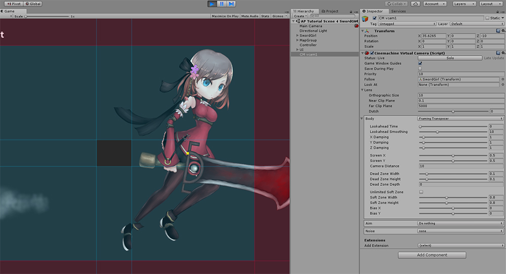

AnyPortrait > マニュアル > 他のアセットとの実行順序の問題
他のアセットとの実行順序の問題
1.0.0
AnyPortraitと他のアセットを一緒に使用してゲームなどを作成するときに、完全に互換性のない問題があります。
アセットごとに独特の特徴があるので、いくつかのアセットとAnyPortraitは、互いに互換性がないことがあります。
ただし、私たちのチームは、ユニティの機能を利用するアセットとの互換性を念頭に置いて開発するので、
いくつかの状況につきましては、適切な解決方法を介して互換性の問題を解決することができます。
このページでは、「スクリプトの実行順序（Script Execution Order）」による問題を解決する方法について説明します。
Unityで提供されるCinemachineというアセットを例として聞きました。

AnyPortraitのデモにCinemachineを連動した画面です。
Cinemachineにカメラを制御することができます。

ゲームを実行すると、AnyPortraitで作られたキャラクターの目が異常にレンダリングされます。
AnyPortraitの「クリッピングマスク（Clipping Mask）」機能が正常に動作していないために発生する問題です。
AnyPortraitは、カメラの位置、方向、設定に応じてレンダリングをどうするかを決定します。
クリッピングマスク、ビルボード、Perspective演算などがこれに該当します。
しかしCinemachineでカメラを制御するロジックとAnyPortraitのカメラ計算ロジックが衝突して正しくレンダリングされていないことです。
同様のロジックが互いに衝突する場合には、概ねAnyPortraitのスクリプトが後で実行されるように作成すると、問題が解決することができます。

ユニティのメニューから「Edit > Project Settings」から「Script Execution Order」を実行します。
ユニティエディタのバージョンに応じて、上記の画面とは異なる場合がありますが、「Project Settings」を実行すると、「Script Execution Order」メニューが同じ存在します。

他のアセットがインストールされた場合、「Script Execution Order」画面で「Default Time」のほか、アセットの実行順序が追加されていることがあります。
Cinemachineのスクリプトが「Default Time」よりも後に実行されるように設定されたことを、上記の画面で見ることができます。
AnyPortraitはCinemachineが実行される順序よりも後に実行する必要があります。
(1) 「+」ボタンを押します。

「AnyPortrait.apPortrait」を選択します。

AnyPortraitが、他のアセットよりも後で実行されるようになります。
(1) 他のアセットよりも大きな値の実行順序を入力します。
(2) Applyボタンを押します。

ゲームを実行すると、現在の問題が解決されて正常にレンダリングがされます。
他のアセットとの互換性について
AnyPortraitはUnityの「メッシュレンダラー（Mesh Renderer）」に関するアセットなので、
Unityの基本的な機能や、一般的なアセットとの互換性をある程度持っています。
しかしながら、Unityの最新機能や様々なアセットとは、ますます多様化して専門され、互換性を保証できない場合があります。
私たちのチームにその機能やアセットとの互換性を問い合わせいただいた場合は、私たちが確認してご案内いたします。
必要に応じて私たちのチームは、その問題についての更新に反映させていただきます。
- 問い合わせページ